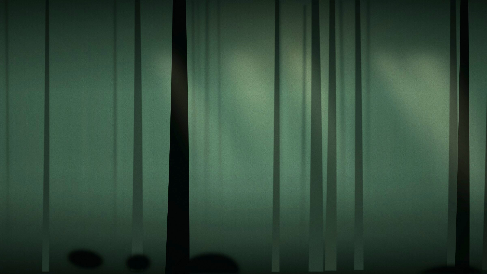
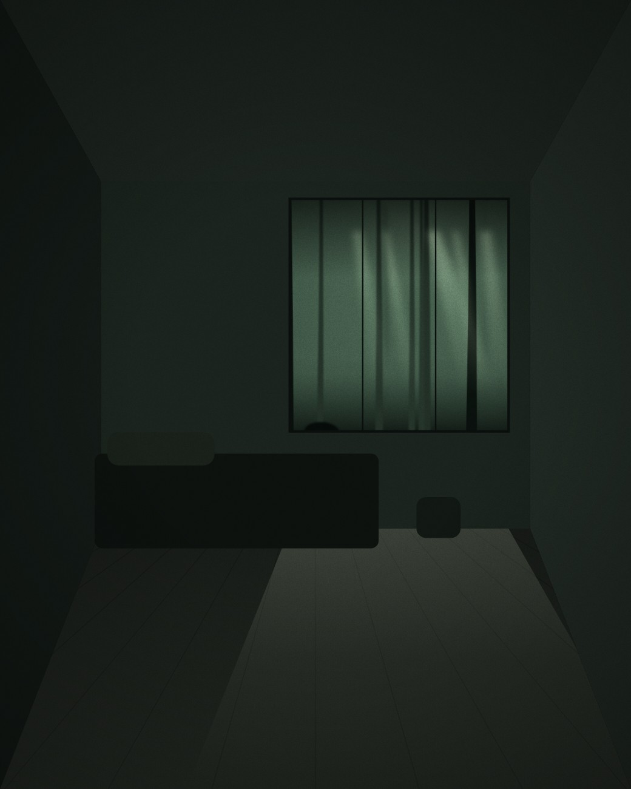

<title>沐森 MUSEN · 台中七期</title>
<style>
  /* 刻意只做暗場單一主題：高階建案文宣的視覺世界就是夜色，
     做亮色版反而會稀釋掉私宅感。這是選擇，不是遺漏。 */
  :root {
    color-scheme: dark;
    --ink:      #070b09;
    --ink-2:    #0c1210;
    --surface:  #111815;
    --surface-a: rgba(7,11,9,0.72);
    --line:     #1c2721;
    --line-2:   #2b3a32;
    --text:     #e9eee9;
    --text-2:   #8b9c92;
    --text-3:   #5d6b64;
    --gold:     #b49164;
    --gold-2:   #d9be8e;

    --serif: "Noto Serif TC", "Songti TC", "Source Han Serif TC", Georgia, "Microsoft JhengHei", serif;
    --sans:  "PingFang TC", "Microsoft JhengHei", "Noto Sans TC", -apple-system, sans-serif;
    --mono:  "JetBrains Mono", ui-monospace, "SFMono-Regular", Menlo, monospace;
  }

  * { box-sizing: border-box; }
  html { scroll-behavior: smooth; }
  body {
    margin: 0;
    background: var(--ink);
    color: var(--text);
    font-family: var(--sans);
    font-size: 15px;
    line-height: 1.8;
    -webkit-font-smoothing: antialiased;
  }
  a { color: inherit; }
  ::selection { background: var(--gold); color: var(--ink); }

  .shell { max-width: 1180px; margin: 0 auto; padding: 0 40px; }

  /* ── 頂列 ── */
  .topbar {
    position: sticky; top: 0; z-index: 40;
    background: var(--surface-a);
    backdrop-filter: blur(14px) saturate(140%);
    border-bottom: 1px solid var(--line);
  }
  .topbar-inner {
    max-width: 1180px; margin: 0 auto; padding: 0 40px;
    height: 70px; display: flex; align-items: center; justify-content: space-between;
  }
  .mark { display: flex; align-items: baseline; gap: 12px; }
  .mark b {
    font-family: var(--serif); font-size: 20px; font-weight: 600;
    letter-spacing: 0.34em; margin-right: -0.34em;
  }
  .mark span {
    font-family: var(--mono); font-size: 10px; letter-spacing: 0.3em;
    color: var(--gold); margin-right: -0.3em;
  }
  .topbar nav { display: flex; gap: 34px; }
  .topbar nav a {
    font-size: 13px; color: var(--text-2); text-decoration: none;
    letter-spacing: 0.1em; padding: 3px 0; position: relative;
  }
  .topbar nav a::after {
    content: ""; position: absolute; left: 0; right: 100%; bottom: 0;
    height: 1px; background: var(--gold); transition: right .4s cubic-bezier(.2,.7,.3,1);
  }
  .topbar nav a:hover, .topbar nav a:focus-visible { color: var(--text); }
  .topbar nav a:hover::after, .topbar nav a:focus-visible::after { right: 0; }

  /* ── 首屏 ── */
  .hero {
    position: relative;
    min-height: calc(100vh - 70px);
    display: flex; align-items: center;
    padding: 80px 0 90px;
    overflow: hidden;
  }
  /* 內縮金線框：裱框感，是這頁唯一的裝飾性筆觸 */
  .hero-frame {
    position: absolute; inset: 34px 40px;
    border: 1px solid rgba(180,145,100,0.22);
    pointer-events: none; z-index: 2;
  }
  .hero-inner { position: relative; z-index: 3; width: 100%; }
  .hero-grid { display: grid; grid-template-columns: 1fr auto; gap: 60px; align-items: center; }

  .eyebrow {
    font-family: var(--mono); font-size: 11px; letter-spacing: 0.34em;
    text-transform: uppercase; color: var(--gold); margin: 0 0 34px;
  }
  .hero h1 {
    font-family: var(--serif);
    font-size: clamp(72px, 13vw, 158px);
    font-weight: 500; margin: 0;
    letter-spacing: 0.16em; line-height: 0.98;
    margin-right: -0.16em;
  }
  .latin {
    font-family: var(--mono); font-size: clamp(11px, 1.4vw, 14px);
    letter-spacing: 0.62em; color: var(--text-3);
    margin: 26px 0 0; margin-right: -0.62em;
  }
  .hero .tagline {
    font-family: var(--serif); font-size: clamp(20px, 2.6vw, 28px);
    margin: 46px 0 0; letter-spacing: 0.16em; color: var(--text);
    font-weight: 400;
  }
  .hero .lead {
    margin: 26px 0 0; font-size: 15px; line-height: 2.1;
    max-width: 27em; color: var(--text-2); letter-spacing: 0.04em;
  }
  /* 直排標語：逐字堆疊，不依賴 writing-mode 的字距行為 */
  .vtag {
    display: inline-flex; flex-direction: column; align-items: center; gap: 15px;
    font-family: var(--serif); font-size: 16px; line-height: 1;
    color: var(--gold-2); padding: 26px 16px;
    border-left: 1px solid rgba(180,145,100,0.34);
  }
  .vtag i { display: block; height: 20px; }

  .scroll-cue {
    position: absolute; left: 50%; bottom: 46px; transform: translateX(-50%);
    z-index: 3; font-family: var(--mono); font-size: 10px;
    letter-spacing: 0.28em; color: var(--text-3);
    display: flex; flex-direction: column; align-items: center; gap: 12px;
  }
  .scroll-cue::after {
    content: ""; width: 1px; height: 46px;
    background: linear-gradient(var(--gold), transparent);
  }

  /* ── 區塊 ── */
  .band { padding: 130px 0; border-top: 1px solid var(--line); }
  .label {
    font-family: var(--mono); font-size: 10px; letter-spacing: 0.3em;
    text-transform: uppercase; color: var(--gold); margin: 0 0 10px;
  }
  .band h2 {
    font-family: var(--serif); font-size: clamp(26px, 3vw, 34px);
    font-weight: 500; letter-spacing: 0.12em; margin: 0 0 56px;
  }

  /* ── 五分鐘：主打賣點自己一個版面 ── */
  .distance { padding: 120px 0; border-top: 1px solid var(--line); background: var(--ink-2); }
  .dist-top { display: grid; grid-template-columns: auto 1fr; gap: 56px; align-items: end; }
  .numeral {
    display: flex; align-items: baseline; gap: 16px;
    font-family: var(--serif); color: var(--gold-2);
    line-height: 0.8;
  }
  .numeral b { font-size: clamp(120px, 20vw, 240px); font-weight: 400; letter-spacing: -0.02em; }
  .numeral em {
    font-style: normal; font-size: clamp(20px, 2.4vw, 30px);
    letter-spacing: 0.2em; color: var(--text);
  }
  .dist-say { padding-bottom: 22px; }
  .dist-say .to {
    font-family: var(--serif); font-size: clamp(21px, 2.6vw, 30px);
    letter-spacing: 0.14em; margin: 0 0 12px;
  }
  .dist-say p { margin: 0; color: var(--text-2); font-size: 14.5px; letter-spacing: 0.04em; max-width: 30em; }

  .index { list-style: none; margin: 66px 0 0; padding: 0; display: grid; grid-template-columns: 1fr 1fr; gap: 0 72px; }
  .index li {
    display: flex; align-items: baseline; gap: 14px;
    padding: 19px 0; border-bottom: 1px solid var(--line);
  }
  .index .n { font-size: 14.5px; letter-spacing: 0.06em; white-space: nowrap; }
  .index .dots { flex: 1; border-bottom: 1px dotted var(--line-2); transform: translateY(-5px); }
  .index .v {
    font-family: var(--mono); font-size: 12px; color: var(--gold);
    letter-spacing: 0.08em; white-space: nowrap; font-variant-numeric: tabular-nums;
  }

  /* ── 理念 ── */
  .concept-grid { display: grid; grid-template-columns: 200px 1fr; gap: 60px; align-items: start; }
  .concept-side .rule { width: 52px; height: 1px; background: var(--gold); margin-top: 18px; }
  .quote {
    font-family: var(--serif); font-size: clamp(23px, 2.9vw, 32px);
    line-height: 2; margin: 0 0 40px; letter-spacing: 0.1em;
    max-width: 22em; font-weight: 400;
  }
  .concept-body p.body {
    font-size: 15px; line-height: 2.2; color: var(--text-2);
    letter-spacing: 0.04em; margin: 0 0 20px; max-width: 40em;
  }

  /* ── 規劃特色 ── */
  .marks { display: grid; grid-template-columns: repeat(3, 1fr); gap: 54px; }
  .mark-no {
    font-family: var(--mono); font-size: 10px; letter-spacing: 0.24em;
    color: var(--gold); margin-bottom: 20px;
  }
  .marks h3 {
    font-family: var(--serif); font-size: 19px; font-weight: 500;
    letter-spacing: 0.12em; margin: 0 0 14px;
  }
  .marks p { margin: 0; font-size: 13.5px; color: var(--text-2); line-height: 2.05; letter-spacing: 0.03em; }

  /* ── 格局 ── */
  .schedule { width: 100%; border-collapse: collapse; }
  .schedule caption {
    text-align: left; font-size: 13px; color: var(--text-2);
    padding-bottom: 22px; letter-spacing: 0.05em;
  }
  .schedule th {
    text-align: left; font-family: var(--mono);
    font-size: 10px; letter-spacing: 0.22em; text-transform: uppercase;
    color: var(--text-3); font-weight: 400;
    border-bottom: 1px solid var(--line-2); padding: 0 18px 14px 0;
  }
  .schedule th:last-child, .schedule td:last-child { text-align: right; padding-right: 0; }
  .schedule td { padding: 24px 18px 24px 0; border-bottom: 1px solid var(--line); font-size: 14.5px; letter-spacing: 0.04em; }
  .schedule tbody tr:last-child td { border-bottom: none; }
  .schedule .unit { font-family: var(--serif); letter-spacing: 0.1em; font-size: 16px; }
  .schedule .fig { font-family: var(--mono); font-variant-numeric: tabular-nums; font-size: 13px; color: var(--gold); }

  /* ── 頁尾 ── */
  .foot { border-top: 1px solid var(--line); padding: 96px 0 76px; }
  .foot-grid { display: grid; grid-template-columns: 1fr auto; gap: 56px; align-items: end; }
  .foot .mark { margin-bottom: 26px; }
  .foot p { margin: 0 0 9px; font-size: 13.5px; color: var(--text-2); letter-spacing: 0.05em; }
  .cta {
    display: inline-flex; align-items: center; gap: 14px; text-decoration: none;
    border: 1px solid var(--gold); color: var(--gold-2);
    padding: 17px 42px; font-size: 13px; letter-spacing: 0.24em;
    transition: background .45s cubic-bezier(.2,.7,.3,1), color .45s;
  }
  .cta::after { content: "→"; font-family: var(--mono); }
  .cta:hover, .cta:focus-visible { background: var(--gold); color: var(--ink); }
  .fine {
    margin-top: 62px; padding-top: 26px; border-top: 1px solid var(--line);
    font-size: 11.5px; color: var(--text-3); letter-spacing: 0.05em; line-height: 2;
  }


  /* ── 首屏底圖（Stage 02 新增） ── */
  .hero-bg { position: absolute; inset: 0; z-index: 0; overflow: hidden; }
  .hero-bg img { width: 100%; height: 100%; object-fit: cover; display: block; }
  .hero-veil {
    position: absolute; inset: 0; z-index: 1; pointer-events: none;
    background:
      linear-gradient(to right, rgba(7,11,9,0.93) 0%, rgba(7,11,9,0.62) 40%, rgba(7,11,9,0.06) 100%),
      linear-gradient(to bottom, rgba(7,11,9,0.55) 0%, rgba(7,11,9,0) 26%, rgba(7,11,9,0) 74%, rgba(7,11,9,0.72) 100%);
  }

  /* ── 空間圖輯 ── */
  .plates { display: grid; grid-template-columns: repeat(3, 1fr); gap: 28px; }
  .plate { margin: 0; }
  .plate .frame {
    position: relative; overflow: hidden; aspect-ratio: 4 / 5;
    background: var(--surface); border: 1px solid var(--line);
  }
  .plate .frame img {
    position: absolute; inset: 0; width: 100%; height: 100%;
    object-fit: cover; display: block;
    transition: transform 1.2s cubic-bezier(.2,.7,.3,1);
  }
  .plate:hover .frame img { transform: scale(1.04); }
  .plate figcaption {
    margin-top: 18px; display: flex; justify-content: space-between; align-items: baseline; gap: 14px;
  }
  .plate figcaption b {
    font-family: var(--serif); font-weight: 500; font-size: 15px;
    letter-spacing: 0.12em; color: var(--text);
  }
  .plate figcaption span {
    font-family: var(--mono); font-size: 10px; letter-spacing: 0.22em; color: var(--gold);
  }
  @media (max-width: 940px) {
    .plates { grid-template-columns: 1fr; gap: 34px; }
    .plate .frame { aspect-ratio: 16 / 10; }
  }

  :focus-visible { outline: 1px solid var(--gold); outline-offset: 4px; }

  /* ── 動態：克制的進場序列 ── */
  .rise { opacity: 0; transform: translateY(22px); }
  @media (prefers-reduced-motion: no-preference) {
    .rise { transition: opacity 1.1s cubic-bezier(.2,.7,.3,1), transform 1.1s cubic-bezier(.2,.7,.3,1); }
  }
  .rise.in { opacity: 1; transform: none; }

  @media (max-width: 940px) {
    .hero-grid { grid-template-columns: 1fr; gap: 40px; }
    .vtag { flex-direction: row; border-left: none; border-top: 1px solid rgba(180,145,100,0.34); padding: 18px 0 0; }
    .vtag i { height: auto; width: 20px; }
    .dist-top { grid-template-columns: 1fr; gap: 26px; align-items: start; }
    .dist-say { padding-bottom: 0; }
    .index { grid-template-columns: 1fr; gap: 0; }
    .concept-grid { grid-template-columns: 1fr; gap: 26px; }
    .marks { grid-template-columns: 1fr; gap: 44px; }
    .topbar nav { gap: 20px; }
    .scroll-cue { display: none; }
  }
  @media (max-width: 620px) {
    .shell, .topbar-inner { padding-left: 24px; padding-right: 24px; }
    .hero-frame { inset: 20px 24px; }
    .band, .distance { padding: 82px 0; }
    .topbar nav a:nth-child(n+3) { display: none; }
    .foot-grid { grid-template-columns: 1fr; align-items: start; }
  }
</style>

<header class="topbar">
  <div class="topbar-inner">
    <span class="mark"><b>沐森</b><span>MUSEN</span></span>
    <nav>
      <a href="#distance">生活尺度</a>
      <a href="#concept">建築理念</a>
      <a href="#design">規劃特色</a>
      <a href="#spaces">空間圖輯</a>
      <a href="#plans">格局配置</a>
    </nav>
  </div>
</header>

<section class="hero">
  <div class="hero-bg"></div>
  <div class="hero-veil"></div>
  <div class="hero-frame"></div>
  <div class="hero-inner">
    <div class="shell">
      <div class="hero-grid">
        <div>
          <p class="eyebrow rise">台中 · 七期經貿園區</p>
          <h1 class="rise">沐森</h1>
          <p class="latin rise">MUSEN RESIDENCE</p>
          <p class="tagline rise">在城市的中心，養一片森林</p>
          <p class="lead rise">步行五分鐘抵達台中市政府站。基地退縮十二公尺，讓出一整座森林中庭，作為每日返家的前景。</p>
        </div>
        <div class="vtag rise" aria-label="退開一步，方得從容">
          <span>退</span><span>開</span><span>一</span><span>步</span>
          <i></i>
          <span>方</span><span>得</span><span>從</span><span>容</span>
        </div>
      </div>
    </div>
  </div>
  <div class="scroll-cue">SCROLL</div>
</section>

<main>
  <!-- 主打賣點：自己一個版面 -->
  <section class="distance" id="distance">
    <div class="shell">
      <p class="label">Distance</p>
      <div class="dist-top">
        <div class="numeral"><b>5</b><em>分鐘</em></div>
        <div class="dist-say">
          <p class="to">步行抵達 台中市政府站</p>
          <p>捷運綠線市政府站 1 號出口，沿市政北二路直行。不必開車、不必轉乘，把通勤還原成一段散步。</p>
        </div>
      </div>
      <ul class="index">
        <li><span class="n">捷運市政府站</span><span class="dots"></span><span class="v">步行 5 分</span></li>
        <li><span class="n">市政公園</span><span class="dots"></span><span class="v">步行 3 分</span></li>
        <li><span class="n">新光三越 · 大遠百</span><span class="dots"></span><span class="v">步行 6 分</span></li>
        <li><span class="n">台灣大道</span><span class="dots"></span><span class="v">車程 3 分</span></li>
        <li><span class="n">國家歌劇院</span><span class="dots"></span><span class="v">車程 8 分</span></li>
        <li><span class="n">台中榮總</span><span class="dots"></span><span class="v">車程 12 分</span></li>
      </ul>
    </div>
  </section>

  <section class="band" id="concept">
    <div class="shell">
      <div class="concept-grid">
        <div class="concept-side">
          <p class="label">Concept</p>
          <div class="rule"></div>
        </div>
        <div class="concept-body">
          <p class="quote">城市給了效率，<br />森林把尺度還給你。</p>
          <p class="body">七期是台中密度最高的一塊土地。我們沒有把它用滿——基地自街廓退縮十二公尺，讓出二百四十坪的森林中庭，種入九十六株喬木。從市政北二路轉進來，會先走過一段樹蔭，才抵達門廳。</p>
          <p class="body">建築量體壓低至地上十四層，一層一戶。所有主要開窗面朝向中庭，把街道的聲音與視線留在外面。捷運五分鐘的方便留著，都市的紛擾請止步於此。</p>
        </div>
      </div>
    </div>
  </section>

  <section class="band" id="design">
    <div class="shell">
      <p class="label">Design</p>
      <h2>規劃特色</h2>
      <div class="marks">
        <div>
          <div class="mark-no">01</div>
          <h3>森林中庭</h3>
          <p>二百四十坪基地退縮，九十六株喬木構成三層次林相。地面層不設圍牆，以植栽與高差界定領域。</p>
        </div>
        <div>
          <div class="mark-no">02</div>
          <h3>一層一戶</h3>
          <p>電梯直達私人玄關，無公共走廊。雙層隔音牆體與氣密窗，將室內背景音量控制於 35 分貝以下。</p>
        </div>
        <div>
          <div class="mark-no">03</div>
          <h3>全齡機能</h3>
          <p>會館設交誼廳、健身房與長者友善的復健水療區。地下二層規劃一戶兩車位與獨立儲藏空間。</p>
        </div>
      </div>
    </div>
  </section>

  <section class="band" id="spaces">
    <div class="shell">
      <p class="label">Spaces</p>
      <h2>空間圖輯</h2>
      <div class="plates">
        <figure class="plate">
          <div class="frame"></div>
          <figcaption><b>起居・面庭落地窗</b><span>01</span></figcaption>
        </figure>
        <figure class="plate">
          <div class="frame"></div>
          <figcaption><b>主臥・側向樹影</b><span>02</span></figcaption>
        </figure>
        <figure class="plate">
          <div class="frame"></div>
          <figcaption><b>中庭・晨霧林徑</b><span>03</span></figcaption>
        </figure>
      </div>
    </div>
  </section>

  <section class="band" id="plans">
    <div class="shell">
      <p class="label">Residences</p>
      <h2>格局配置</h2>
      <table class="schedule">
        <caption>全案 44 戶，地上十四層、地下三層，一層一戶。</caption>
        <thead>
          <tr><th>戶型</th><th>格局</th><th>坪數</th><th>戶數</th></tr>
        </thead>
        <tbody>
          <tr><td class="unit">標準層 · 四房</td><td>4 房 2 廳 3 衛</td><td class="fig">68.4 坪</td><td class="fig">18</td></tr>
          <tr><td class="unit">景觀層 · 四房</td><td>4 房 2 廳 4 衛</td><td class="fig">82.6 坪</td><td class="fig">16</td></tr>
          <tr><td class="unit">樓中樓</td><td>5 房 3 廳 4 衛</td><td class="fig">118.0 坪</td><td class="fig">8</td></tr>
          <tr><td class="unit">頂層一戶</td><td>5 房 3 廳 5 衛 · 私人露臺</td><td class="fig">156.2 坪</td><td class="fig">2</td></tr>
        </tbody>
      </table>
    </div>
  </section>
</main>

<footer class="foot" id="contact">
  <div class="shell">
    <div class="foot-grid">
      <div>
        <span class="mark"><b>沐森</b><span>MUSEN</span></span>
        <p>接待會館｜台中市西屯區市政北二路 168 號</p>
        <p>預約制賞屋｜每日 11:00 – 19:00</p>
      </div>
      <a class="cta" href="#">預約專人導覽</a>
    </div>
    <p class="fine">本頁建案名稱、地址、規格與聯絡資訊均為虛構，非真實銷售資訊。距離與時間為示意值。</p>
  </div>
</footer>

<script>
  var reduce = window.matchMedia('(prefers-reduced-motion: reduce)').matches;
  var heroBits = document.querySelectorAll('.hero .rise');
  var rest = document.querySelectorAll('.band .shell > *, .distance .shell > *, .foot-grid, .fine');

  if (reduce || !('IntersectionObserver' in window)) {
    heroBits.forEach(function (el) { el.classList.add('in'); });
    rest.forEach(function (el) { el.classList.add('in'); });
  } else {
    /* 首屏：載入後依序浮現 */
    heroBits.forEach(function (el, i) {
      el.style.transitionDelay = (0.12 + i * 0.13).toFixed(2) + 's';
      requestAnimationFrame(function () {
        requestAnimationFrame(function () { el.classList.add('in'); });
      });
    });
    /* 其餘：捲到才浮現 */
    rest.forEach(function (el) { el.classList.add('rise'); });
    var io = new IntersectionObserver(function (entries) {
      entries.forEach(function (e) {
        if (e.isIntersecting) { e.target.classList.add('in'); io.unobserve(e.target); }
      });
    }, { rootMargin: '0px 0px -14% 0px' });
    rest.forEach(function (el) { io.observe(el); });
  }
</script>
